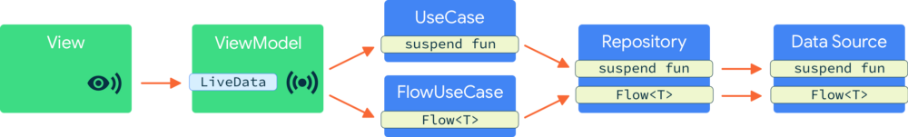

Lessons learnt using Coroutines Flow in the Android Dev Summit 2019 app
Best practices we found when using Flow in the ADS 2019 app
This article is about the best practices we found when using Flow in the Android Dev Summit (ADS) 2019 app; which has just been open sourced. Keep reading to find out how each layer of our app handles data streams.
The ADS app architecture follows the recommended app architecture guide, with the addition of a domain layer (of UseCases) which help separate concerns, keeping classes small, focused, reusable and testable:
 Architecture of the ADS 2019 app
Like many Android apps the ADS app lazily loads data from the network or a cache; we found this to be a perfect use case for Flow. For one shot operations, suspend functions were a better fit. There are two main commits that refactor the app to use Coroutines. The first commit migrates one-shot operations, and the second one migrates to data streams.
1. Prefer exposing streams as Flows (not Channels)
There are two ways you can deal with streams of data in coroutines: the Flow API and the Channel API. Channels are a synchronisation primitive whereas Flow is built to model streams of data: it’s a factory for subscriptions to streams of data. Channels can however be used to back a Flow, as we’ll see later.
Prefer exposing Flow since it gives you more flexibility, more explicit contracts and operators than Channel
Flows automatically close the stream of data due to the nature of the terminal operators which trigger the execution of the stream of data and complete successfully or exceptionally depending on all the flow operations in the producer side. Therefore, you can’t (nearly as easily) leak resources on the producer side. This is easier to do with Channels: the producer might not clean up heavy resources if the Channel is not closed properly.
The data layer of an app is responsible for providing data usually by reading from a database or fetching from the Internet. For example here’s a DataSource interface that exposes a stream of user event data:
interface UserEventDataSource {
fun getObservableUserEvent(userId: String): Flow<UserEventResult>
}
2. How to use Flow in your Android app architecture
UseCase and Repository
The layers in-between View/ViewModel and the DataSource (i.e. UseCase and Repository in our case) often need to combine data from multiple queries or transform the data before it can be used by the ViewModel layer. Just like Kotlin sequences, Flow supports a large set of operators to transform your data. There are a wealth of operators already available, or you can create your own transformation (e.g. using the transform operator). However, Flow exposes suspend lambdas on many of the operators, there’s often no need to make a custom transform to accomplish complex tasks, just call suspend functions from inside your Flow.
In our ADS example, we want to combine the UserEventResult with session data in the Repository layer. We use the map operator to apply a suspend lambda to each value of the Flow retrieved from DataSource:
/* Copyright 2019 Google LLC.
SPDX-License-Identifier: Apache-2.0 */
class DefaultSessionAndUserEventRepository(
private val userEventDataSource: UserEventDataSource,
private val sessionRepository: SessionRepository
) : SessionAndUserEventRepository {
override fun getObservableUserEvent(
userId: String?,
eventId: SessionId
): Flow<Result<LoadUserSessionUseCaseResult>> {
// Handles null userId
// Observes the user events and merges them with session data
return userEventDataSource.getObservableUserEvent(userId, eventId).map { userEventResult ->
// lambda of the map operator that can call suspend functions
val event = sessionRepository.getSession(eventId)
// Merges session with user data and emits the result
val userSession = UserSession(
event,
userEventResult.userEvent ?: createDefaultUserEvent(event)
)
Result.Success(LoadUserSessionUseCaseResult(userSession))
}
}
}
ViewModel
When performing UI ↔ ViewModel communication with LiveData, the ViewModel layer should consume the stream of data coming from the data layer using a terminal operator (e.g. collect, first or toList).
/* Copyright 2019 Google LLC.
SPDX-License-Identifier: Apache-2.0 */
// Simplified version of the real code
class SessionDetailViewModel(
private val loadUserSessionUseCase: LoadUserSessionUseCase,
/* ... */
): ViewModel() {
private fun listenForUserSessionChanges(sessionId: SessionId) {
viewModelScope.launch {
loadUserSessionUseCase(sessionId).collect { loadResult ->
// Update multiple LiveDatas to notify the View
}
}
}
}
See full code here.
If you’re converting a Flow to a LiveData, you can use the Flow.asLiveData() extension function from the androidX lifecycle LiveData ktx library. This is very convenient since it will share a single underlying subscription to the Flow and will manage the subscription based on the observers’ lifecycles. Moreover, LiveData also keeps the most recent value for late-coming observers and the subscription active across configuration changes. Check this simpler code that showcases how you can use the extension function:
class SimplifiedSessionDetailViewModel(
private val loadUserSessionUseCase: LoadUserSessionUseCase,
/* ... */
): ViewModel() {
val sessions = loadUserSessionUseCase(sessionId).asLiveData()
}
Disclaimer: The code snippet above is not part of the app; it’s a simplified version of the code that showcases how you can use Flow.asLiveData().
3. When to use a BroadcastChannel or Flow as an implementation detail
Back to the DataSource implementation, how can we implement the getObservableUserEvent function we exposed above? The team considered two alternatives implementations: the flow builder or the BroadcastChannel API. Each serve different use cases.
When to use Flow
Flow is a cold stream. A cold stream is a data source whose producer will execute for each listener that starts consuming events, resulting in a new stream of data being created on each subscription. Once the consumer stops listening or the producer block finishes, the stream of data will be closed automatically.
Flow is a great fit when the production of data needs to start/stop to match the observer
You can emit a limited or unlimited number of elements using the flow builder.
val oneElementFlow: Flow<Int> = flow {
// producer block starts here, stream starts
emit(1)
// producer block finishes here, stream will be closed
}
val unlimitedElementFlow: Flow<Int> = flow {
// producer block starts here, stream starts
while(true) {
// Do calculations
emit(result)
delay(100)
}
// producer block finishes here, stream will be closed
}
Flow tends to be used for expensive tasks as it provides automatic cleanup via coroutine cancellation. Notice that this cancellation is cooperative, a flow that never suspends can never be cancelled: in our example, since delay is a suspend function that checks for cancellation, when the subscriber stops listening, the Flow will stop and cleanup resources.
When to use BroadcastChannel
A Channel is a concurrency primitive for communicating between coroutines. A BroadcastChannel is an implementation of Channel with multicast capabilities.
There are some cases where you might want to use an implementation of BroadcastChannel in your data source layer:
Use
BroadcastChannelwhen the producer(s) and consumer(s) have different lifetimes or operate completely independently of each other
The BroadcastChannel API is the perfect fit when you want the producer to follow a different lifecycle and broadcast the current result to anyone who’s listening. In this way, the producer doesn’t need to start every time a new listener starts consuming events.
You can still expose a Flow to the caller, they don’t need to know about how this is implemented. You can use the extension function BroadcastChannel.asFlow() to expose a BroadcastChannel as a Flow.
However, closing that Flow won’t cancel the subscription. When using BroadcastChannel, you have to take care of its lifecycle. They don’t know if there are listeners or not, and will keep resources alive until the BroadcastChannel is cancelled or closed. Make sure to close the BroadcastChannel when it’s no longer needed. Also, remember that a closed channel cannot be active again, you’d need to create a new instance.
An example of how to use the BroadcastChannel API can be found in the next section.
Disclaimer
Parts of the Flow and Channel APIs are still in experimental, they’re likely to change. There are some situations where you would currently use Channels but the recommendation in the future may change to use Flow. Specifically, the StateFlow and Flow’s share operator proposals may reduce the usage of Channel in the future.
4. Convert data streams callback-based APIs to Coroutines
Multiple libraries already support coroutines for data streams operations, including Room. For those that don’t, you can convert any callback-based API to Coroutines.
Flow implementation
If you want to convert a stream callback-based API to use Flow, you can use the channelFlow function (also callbackFlow, which shares the same implementation). channelFlow creates an instance of a Flow whose elements are sent to a Channel. This allows us to provide elements running in a different context or concurrently.
In the following sample, we want to emit the elements that we get from a callback into a Flow:
- Create a flow with the
channelFlowbuilder that registers a callback to a third party library. - Emit all items received from the callback to the Flow.
- When the subscriber stops listening, we unregister the subscription to the API using the suspend fun
awaitClose.
/* Copyright 2019 Google LLC.
SPDX-License-Identifier: Apache-2.0 */
override fun getObservableUserEvent(userId: String, eventId: SessionId): Flow<UserEventResult> {
// 1) Create Flow with channelFlow
return channelFlow<UserEventResult> {
val eventDocument = firestore.collection(USERS_COLLECTION)
.document(userId)
.collection(EVENTS_COLLECTION)
.document(eventId)
// 1) Register callback to the API
val subscription = eventDocument.addSnapshotListener { snapshot, _ ->
val userEvent = if (snapshot.exists()) {
parseUserEvent(snapshot)
} else { null }
// 2) Send items to the Flow
channel.offer(UserEventResult(userEvent))
}
// 3) Don't close the stream of data, keep it open until the consumer
// stops listening or the API calls onCompleted or onError.
// When that happens, cancel the subscription to the 3P library
awaitClose { subscription.remove() }
}
}
See full code here.
BroadcastChannel implementation
For our stream of data that tracks user authentication with Firestore, we used the BroadcastChannel API as we want to register one Authentication listener that follows a different lifecycle and broadcasts the current result to anyone who’s listening.
To convert a callback API to BroadcastChannel you need a bit more code than with Flow. You can create a class where the instance of the BroadcastChannel can be kept in a variable. During initialisation, register the callback that sends elements to the BroadcastChannel as before:
/* Copyright 2019 Google LLC.
SPDX-License-Identifier: Apache-2.0 */
class FirebaseAuthStateUserDataSource(...) : AuthStateUserDataSource {
private val channel = ConflatedBroadcastChannel<Result<AuthenticatedUserInfo>>()
private val listener: ((FirebaseAuth) -> Unit) = { auth ->
// Data processing logic
// Send the current user for observers
if (!channel.isClosedForSend) {
channel.offer(Success(FirebaseUserInfo(auth.currentUser)))
} else {
unregisterListener()
}
}
@Synchronized
override fun getBasicUserInfo(): Flow<Result<AuthenticatedUserInfo>> {
if (!isListening) {
firebase.addAuthStateListener(listener)
isListening = true
}
return channel.asFlow()
}
}
See full code here.
5. Testing tips
To test Flow transformations (as we do in the UseCase and Repository layers), you can use the flow builder to return fake data. For example:
/* Copyright 2019 Google LLC.
SPDX-License-Identifier: Apache-2.0 */
object FakeUserEventDataSource : UserEventDataSource {
override fun getObservableUserEvents(userId: String) = flow {
emit(UserEventsResult(userEvents))
}
}
class DefaultSessionAndUserEventRepositoryTest {
@Test
fun observableUserEvents_areMappedCorrectly() = runBlockingTest {
// Prepare repo
val userEvents = repository
.getObservableUserEvents("user", true).first()
// Assert user events
}
}
To test implementations of Flow successfully, a good idea is to use the take operator to get some items from the Flow and the toList operator as the terminal operator to get the results in a list. See an example of this in the following test:
class AnotherStreamDataSourceImplTest {
@Test
fun `Test happy path`() = runBlockingTest {
// Prepare subject
val result = subject.flow.take(1).toList()
// Assert expected result
}
}
The take operator is a great fit to close the Flow after you get the items. Not closing a started Flow (or BroadcastChannel) after each test will leak memory and creates a flaky and inconsistent test suite.
Note: If the implementation of the DataSource is done with a BroadcastChannel, the code above is not enough. You have to manage its lifecycle by making sure you start the BroadcastChannel before the test and close it after the test finishes. If not, you’ll leak memory. You can see a test like this in this other Flow sample.
Testing Coroutines best practices also apply here. If you create a new coroutine in code under test, you might want to execute it in your test thread for a deterministic execution of your test. Check out more about this in the Testing Coroutines ADS 2019 talk.
Summary
-
Prefer exposing Flow to consumers rather than
Channelbecause of all the explicit contracts and operators Flow provides. -
With Flow, the producer block will get executed every time there’s a new listener and the lifecycle of the stream of data will be handled automatically.
-
With
BroadcastChannel, you can share the producer but you have to manage its lifecycle yourself. -
Consider converting callback-based APIs to coroutines for a better and more idiomatic integration of the APIs within your app.
-
Easily test implementations of Flow by using the
takeandtoListoperators.